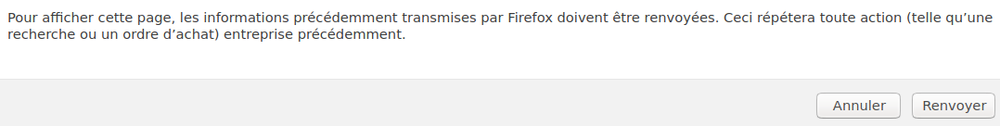

Remarque : n'hésitez pas à appliquer votre fichier CSS à cette page HTML pour la rendre plus attrayante.
1. Interactions Client - Serveur
Le schéma client-serveur désigne un mode de communication entre programmes : l'un est qualifié de "client", c'est celui qui envoie des requêtes. L'autre est appelé "serveur" et il répond aux requêtes du client. Dans le cas du Web, le client est le navigateur web et on utilise le protocole HTTP pour communiquer avec le serveur.
Les inventeurs du Web, Tim Berners-Lee et Robert Caillau ont défini au CERN entre 1989 et 1991 ses trois piliers, les protocoles HTTP, URL et HTML. Ces trois protocoles sont nécessaires à la compréhension des interactions client-serveur.
L'adresse URL
Une adresse URL pour "Uniform Ressource Locator" identifie une ressource sur le Web. La syntaxe des URL est standardisée.
Par exemple, décomposons l'URL suivante : https://www.gnu.org/gnu/linux-and-gnu.fr.html
- le protocole est HTTPS (version sécurisée par TLS du protocole HTTP).
- le nom de domaine sur Internet du serveur Web est gnu.org.
- www est un sous-domaine du domaine gnu.org.
- gnu étant déjà un sous-domaine du domaine principal org (org est un TLD, c'est à dire un "Top Level Domain").
- gnu/linux-and-gnu.fr.html est le chemin vers la ressource sur le serveur : le fichier linux-and-gnu.fr.html qui se trouve dans le dossier public gnu.
Le schéma suivant résume assez bien la structure d'une URL :

Le langage HTML
HTML, pour Hypertext Markup Language, est le langage de description des documents textes disponibles sur le Web qui sont reliées entre eux par des liens hypertextes. Il s’agit d’un langage à balises.
En pratique, d’autres types de ressources sont accessibles sur le Web par une URL : des images, des fichiers de données (aux formats CSV, JSON …), des videos,… Par ailleurs les pages sont désormais réalisées en combinant HTML avec CSS pour la mise en forme, le positionnement, certains effets visuels et Javascript pour la programmation événementielle nécessaire à l’interactivité côté client.

Le protocole HTTP
Le protocole HTTP, acronyme d’Hypertext Transfer Protocol, est un protocole de la couche application qui décrit le format des échanges de données entre un client et un serveur sur le Web. Un échange HTTP s’établit selon le schéma suivant :
- Le client saisit une URL dans la barre d’adresse du navigateur (ou en cliquant sur un hyperlien), elle est "résolue" en adresse IP par le service DNS.
- Une connexion TCP entre le client et le serveur est alors mise en place.
- Le client envoie une requête HTTP.
- Le serveur retourne une réponse HTTP, lue par le client. S’il y a un contenu, il est affiché par le navigateur du client.
- Fermeture de la connexion TCP ou demande de réutilisation pour les requêtes suivantes.
2. Les interactions client-serveur pour l'envoi de formulaires
Premières observations de requêtes HTTP sur des pages web
Effectuer les actions suivantes :
- Avec un navigateur Web, demander la page d’adresse http://frederic-junier.org/NSI/sandbox/index.html.
- Ouvrir la barre d’outils de développement en appuyant sur la touche
de fonction
F12et sélectionner l’onglet Réseau (Network). - Au besoin, rafraichir la page avec la combinaison de touches
Ctr + R. - Sélectionner la page actuelle "index.html" dans l'onglet "Name". On peut voir les entêtes de la requête et de la réponse HTTP.
Répondre aux questions suivantes :
- Que représente le code d’état (Status code) de la réponse HTTP ?
- Quelle est la méthode de cette requête HTTP ? GET ou POST ?
- Quelles informations sur le client sont transmises au serveur dans l’entête de la requête ?
- Quelles informations sur le serveur sont transmises au client dans l’entête de la réponse ?
Quelques requêtes HTTP particulières
Effectuer de nouvelles requêtes avec les URL suivantes. Bien observer le détail des URL puis répondre aux questions posées :
- http://frederic-junier.org/NSI/sandbox/.
- Quelle différence avec la requête initiale ?
- https://frederic-junier.org/NSI/sandbox/.
- Quelle différence avec la requête initiale peut-on observer dans la barre d’adresse du navigateur ?
- http://frederic-junier.org/NSI/Sandbox/index.html.
- Quel est le code d’état de la réponse ? Explication ?
- http://frederic-junier.org/NSI/interdit.
- Quel est le code d’état de la réponse ? Explication ?
Les inspecteurs mènent la requête !
Voici les copies d'écran des "inspecteurs" de deux navigateurs web différents. Dans les deux cas, la même page est inspectée. Observez-vous une différence ?
 |
 |
|---|---|
| Inspecteur de Firefox | Inspecteur de Brave |
Passage de paramètres dans une URL
Ouvrir un navigateur Web.
-
Demander la page d’adresse http://frederic-junier.org/NSI/sandbox/accueil.php
Quel est l’affichage obtenu ?
-
Demander la page d’adresse
http://frederic-junier.org/NSI/sandbox/accueil.php?nom=Turing&prenom=Alan- D'après l'URL, demande-t-on à ouvrir la même page web ?
- Quel est l’affichage obtenu ?
La partie
?nom=Turing&prenom=Alande l’URL est une chaîne de requête, elle commence par le symbole?puis contient une liste de pairesnom=valeurséparées par un symbole esperluette&. Ces paramètres ne font pas partie de l’adresse de la ressource mais sont une façon pour le client de transmettre des informations au serveur.
Inspection de la chaîne de requête -
Remplacer Turing par votre nom et Alan par votre prénom dans l’URL précédente. Que peut-on remarquer ? À votre avis, que se passe-t-il sur le serveur lorsqu’il reçoit la requête HTTP ?
Voici le contenu du fichier
accueil.phpsur le serveur.<!DOCTYPE html>
<html lang="fr">
<head>
<title>Accueil </title>
<meta charset="utf-8">
</head>
<body>
<h1> <?php echo "Bienvenue " . $_GET['prenom'] . " " . $_GET['nom'] ; ?> </h1>
</body>
</html>
- S’agit-il d’un texte écrit en HTML ? Faire une recherche sur la signification de l’acronyme PHP.
- Enregistrer l’URL testée précédemment dans les marque-pages du navigateur. Ouvrir un autre onglet et cliquer sur le signet enregistré. Retrouve-t-on la même page Web ?
- Repérer dans ce code source la méthode employée pour atteindre les valeurs passées en paramètre.
3. Formulaire et passage de paramètres par la méthode GET ou la méthode POST
Méthode GET
Ouvrir avec un navigateur Web la page d’URL : http://frederic-junier.org/NSI/sandbox/formulaire-get.html
- Cliquer sur le bouton
Envoyer.- Que se passe-t-il ?
- Rafraîchir la page avec
F5.- Que se passe-t-il ?
- Changer les valeurs des champs
PrénometNomdu formulaire puis cliquer sur le boutonEnvoyer.- Que se passe-t-il ?
- Ouvrir la fenêtre des outils de développement et afficher dans l’onglet Réseau l’entête de la requête HTTP.
- Vérifier que la méthode utilisée est bien la méthode GET
- Que remarque-t-on dans l'URL de la requête ?

- Afficher le code source de la page
formulaire-get.htmlavec le raccourci clavierCRTL + U.- Repérer la zone de code qui définit que la méthode GET doit être utilisée.
Méthode POST
Ouvrir avec un navigateur Web la page d’URL : http://frederic-junier.org/NSI/sandbox/formulaire-post.html
- Cliquer sur le bouton
Envoyer.- Que se passe-t-il ?
- Changer les valeurs des champs
PrénometNomdu formulaire puis cliquer sur le boutonEnvoyer.- Que se passe-t-il ?
- Observe-t-on un changement dans l’URL de la requête ? dans son entête ?
- Rafraîchir la page avec
F5.- Que se passe-t-il ?

- Afficher le code source de la page
formulaire-post.htmlavec le raccourci clavierCRTL + U.- Quels sont les deux changements par rapport au code de
formulaire-get.html?
- Quels sont les deux changements par rapport au code de
4. L'interactivité Client - Serveur par protocole HTTP, le résumé
Les méthodes GET ou POST des formulaires HTML
En HTML, un formulaire est un élément qui permet de transmettre des informations à
un serveur Web. Il est composé d’un élément <form
action="http://domaine/cible" method="GET ou POST"> qui contient un ou
plusieurs widgets (éléments HTML <select> ou <input>
permettant de saisir les entrées du client) et au moins un élément <button
type="submit>Bouton d'envoi</button>.
Un clic sur ce bouton déclenche l’exécution d’une requête HTTP qui va
transmettre les données saisies selon les valeurs des attributs action
et method de l’élément <form> :
actiona pour valeur l’URL du fichier auquel sera envoyé le formulaire. Ce fichier, situé sur le serveur, est un programme écrit dans un langage de script, comme PHP, qui va prendre en entrée les paramètres du formulaire transmis par le client, les traiter et générer la page Web en HTML, qui lui sera renvoyée.methodpeut prendre deux valeurs GET ou POST (en minuscule ou majuscule). Ce sont les deux modes de transmission des paramètres du formulaire qui sont deux méthodes distinctes du protocole HTTP :- avec la méthode GET, les données du formulaire sont assemblées dans une chaîne de
paires
nom=valeurséparées par le symbole&qui est ajoutée à la fin de l’URL après le délimiteur?. - avec la méthode POST les données du formulaire sont transmises dans le corps de la requête. Les données n’apparaissent donc pas dans l’URL.
- avec la méthode GET, les données du formulaire sont assemblées dans une chaîne de
paires
Caractéristiques de la méthode GET
- Comme son nom l'indique, la méthode GET est uniquement utilisée pour demander une ressource, elle ne modifie pas l’état du serveur. Un exemple classique d’utilisation est la formulation d’une requête à l’aide du formulaire d’un moteur de recherche. L’URL générée peut être utilisée plusieurs fois et conservée comme favori.
- Toutes les informations sont transmises en clair dans l’URL. Celle-ci est limitée en taille donc la méthode GET ne peut pas être utilisée pour transmettre des informations trop longues.
- Elle utilise le codage ASCII, ce qui limite la complexité des données transmises.
- Une requête GET est constituée uniquement d’un entête, elle n’a pas de corps.
Caractéristiques de la méthode POST
- Les données envoyées peuvent modifier l’état du serveur. Par exemple, les requêtes POST sont utilisées pour les modifications de bases de données sur le serveur (achats, réservation, transfert de fichiers …). Par conséquent si on veut renvoyer les données d’un formulaire, un message "popup" avertit que ce nouvel envoi peut modifier l’état du serveur et, par exemple, enregistrer un nouvel achat s’il s’agit d’un formulaire de commande.
- Les données sont transmises dans le corps de la requête, il n’y a pas de restriction de taille ni de type de données.
- Les données n’apparaissent pas dans l’URL, néanmoins, si le protocole HTTP est employé sans chiffrement, il suffit d’intercepter la requête pour accéder aux données en clair.
Autres méthodes HTTP
Sans rentrer dans les détails, on peut toutefois remarquer que les méthodes GET et POST ne sont pas les seules méthodes du protocole HTTP. Les plus curieux d'entre-vous pourront jeter un coup d'oeil au site suivant.
Le langage PHP pour traiter les données du côté Serveur
Voici un autre exemple de formulaire :
Dans un premier temps, observer le code source de ce formulaire et en particulier
les attributs de la balise <form>, puis remplir le formulaire.
Comme vous l'avez constaté ce formulaire n'aboutit pas car "ma-page-de-traitement.php"
n'existe pas. Nous allons voir comment récupérer les informations du formulaire
grâce au langage PHP.
Toutefois, l'installation d'un serveur PHP n'étant pas exigible en classe de première,
nous en resterons à une théorie assez superficielle.
Wikipédia : Hypertext Preprocessor, plus connu sous son sigle PHP, est un langage de programmation libre, principalement utilisé pour produire des pages Web dynamiques via un serveur HTTP, mais pouvant également fonctionner comme n'importe quel langage interprété de façon locale. PHP a permis de créer un grand nombre de sites web célèbres, comme Facebook, Wikipédia,...
Voici un contenu possible pour le fichier ma-page-de-traitement.php :
<?php #indique le début d'un script php.
$html=<<<HTML #une variable en PHP sera toujours préfixé avec un $.
# le <<<HTML indique que la suite
contient du HTML jusqu'au HTML;
<!doctype html>
<html lang="fr">
<head>
<meta charset="utf-8">
<meta name="viewport" content="width=device-width, initial-scale=1, shrink-to-fit=no">
<title>formulaire réponse
</head>
<body>
<p>Ton nom est : $_GET[user_name] #ici on accède à la valeur enregistrée
avec la clé user_name
<p>Ton email est : $_GET[user_mail]
</body>
</html>
HTML; #fin de la ligne de code PHP contenant du HTML
echo $html; #echo sert à afficher la variable qui suit. On affiche ici la variable html.
En analysant ce code, on remarque que :
- Les informations envoyées par la méthode
GETsont automatiquement stockées dans une variable$_GET. - La structure de cette variable est un tableau associatif (un peu comme un dictionnaire)
où les clés sont les valeurs des attributs
name, définis dans les balises<input>. - Le langage PHP utilise les variables
$_GET[user_name]et$_GET[user_mail]pour construire la page web dynamique que renvoit le serveur au client.
5. Le HTTPS en BD

6. Que retenir ?
A minima...
- Une page web a pour vocation d'être consultable à distance. Pour cela, un client (le navigateur web de l'utilisateur) émet une requête auprès du serveur qui possède les données demandées.
- Parfois, le serveur peut renvoyer une page web personnalisée, créee à partir de données envoyées par le client. C'est le cas lorsqu'on remplit un formulaire.
- Le client utilise une requête HTTP (ou HTTPS si elle est chiffrée) pour demander une page web au serveur. Il peut ajouter des données à cette requête, comme les réponses à un formulaire.
Au mieux...
- La chaîne de communication Client - Serveur comprend les étapes suivantes :
- Le client envoie une requête HTTP (de type GET ou POST) au serveur.
- Le serveur reçoit cette demande et vérifie s'il reçoit des données complémentaires...
- ...dans l'URL (après le caractère ?) si la méthode GET est utilisée
- ...dans le corps de la requête si la méthode POST est utilisée.
- S'il reçoit des données, le serveur peut les traiter. Ces données peuvent servir à créer la page web qu'il va renvoyer.
- Le serveur envoie en réponse la page web demandée au client.
- Le client reçoit la réponse et affiche la page web incluse dans cette réponse.
- La méthode GET est à privilégier si on veut conserver dans l'URL les données à transmettre (par exemple pour garder une recherche Qwant dans les favoris).
- La méthode POST est à privilégier si on veut garder confidentielles les données à transmettre, à condition toutefois que la requête soit chiffrée (Protocole HTTPS).